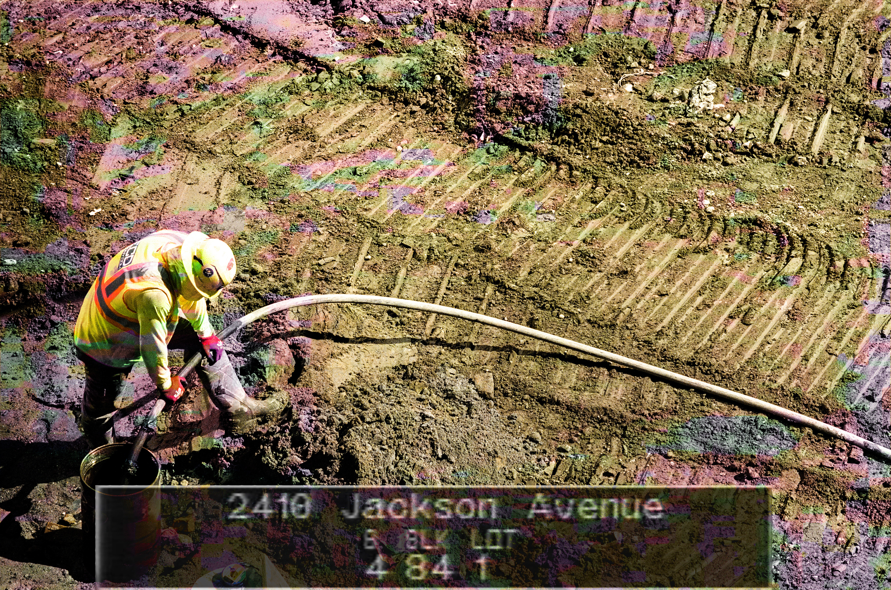
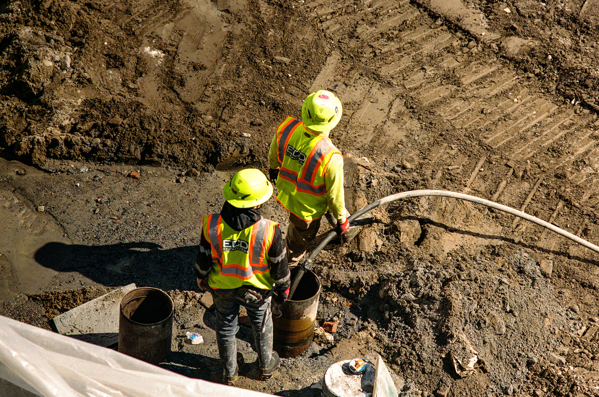
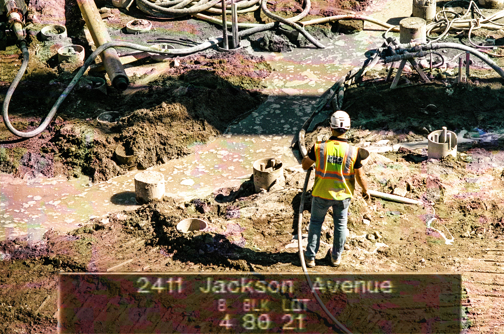
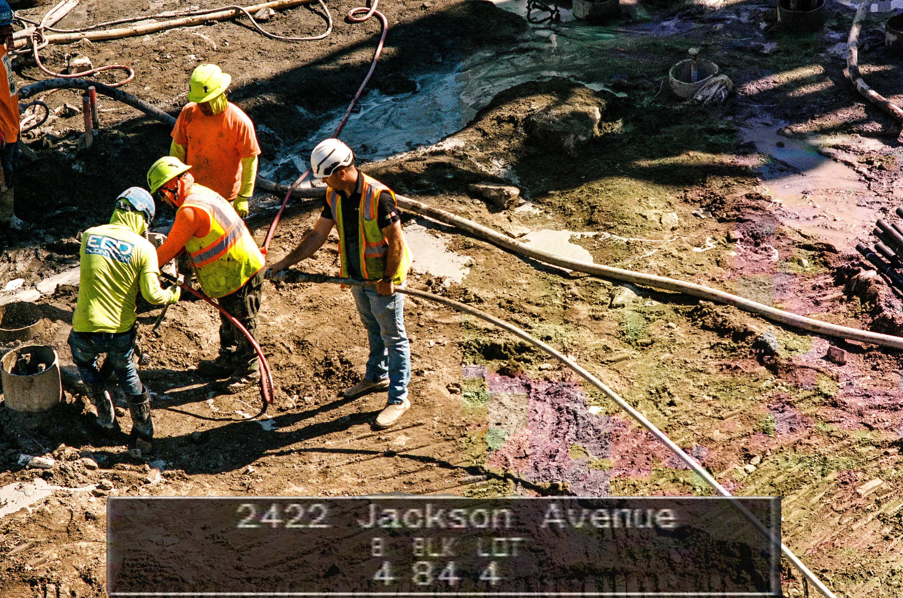
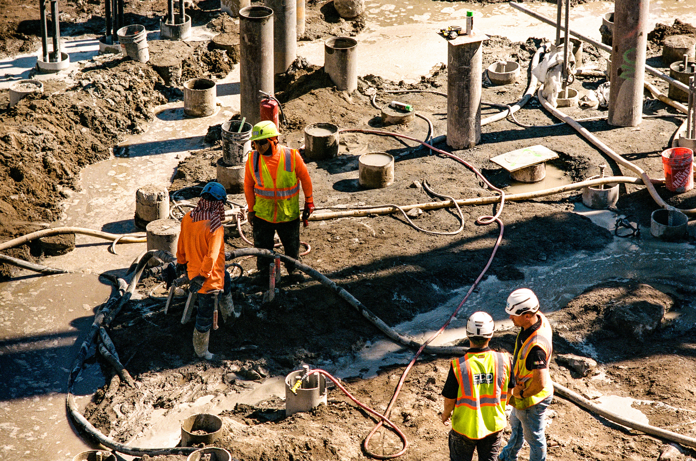
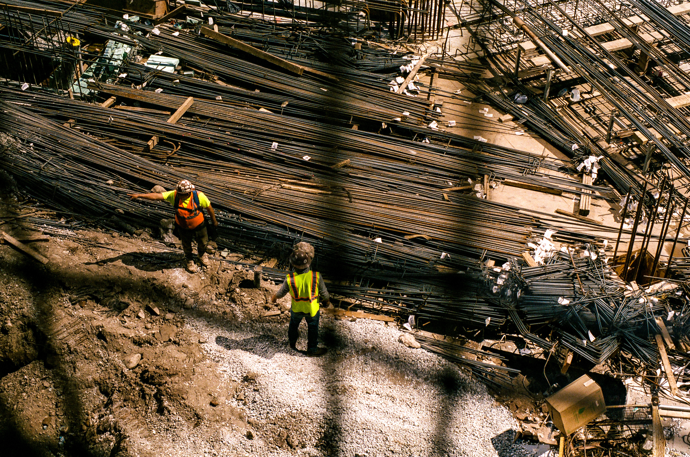
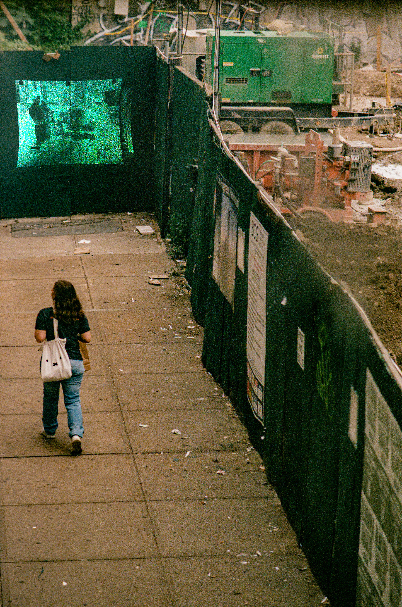
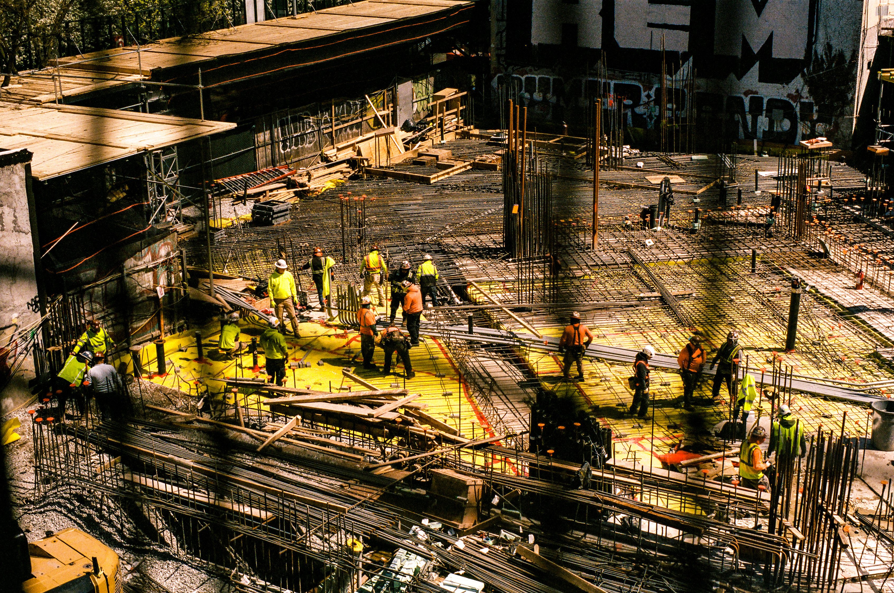
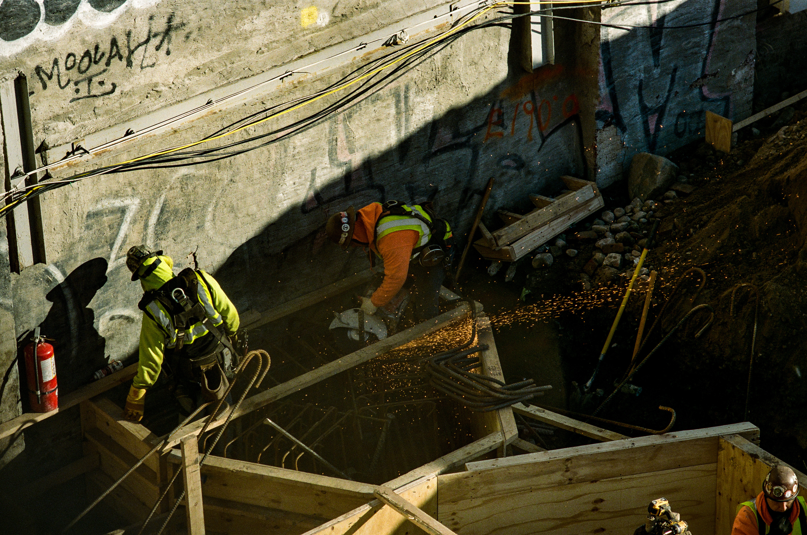

[site experiments]

I.
24-19 Jackson Avenue - developer shorthand for the addresses spanning from 24-10 to 24-28 Jackson Avenue just below the Court Square MTA station- will be a mixed-use residential development with 600 apartments, 10,000 square feet of retail space, and a Chelsea Piers. Designed by the high-profile American architecture firm FXCollaborative, the project is being developed by Charney Companies, Tavros, and Incoco Capital.
I've been transferring at Court Square to the 7 train for the past three years, since I started working as an urban planner in midtown Manhattan, overseeing the planning and development of affordable housing. From the 7 train platform, I've witnessed this site go from vacant to now, as construction workers build a tower from the ground up.
While I write emails and reports, my counterparts use their bodies to make a plan a reality. My work - and that of planners, developers, architects, and the like - is not bodily. It does not wear you down. Construction work does.

II.
According to the business intelligence site PincusCo, Charney Companies owns $1.9 billion dollars worth of real estate. Tavros owns $1.8 billion. Incoco Capital owns $756.9 million.
According to New York State's Department of Labor, the median wage for a construction worker in New York State is $61,012. After years of experience, it's $106,852.
While developers manipulate financial capital, land use regulations, and rent prices to get the highest return on their investment, construction workers labor to make these returns realities. Developers cannot rent out apartments unbuilt. Thus, construction workers enable the returns necessary for the survival and growth of their employers.
Why shouldn't this value flow back to the laborers who created it?


III.
As construction continues, 24-19 Jackson Avenue's history, and that of the greater Court Square area, remains intact through the images that record it.
The photographs in this series continue this record to the present, as evidence of the workers whose labor enabled this development.

IV.
24-19 Jackson Avenue is not, at its core, a long derelict site whose day has finally come. If you look up the area on the New York Public Library and New York City archives, you'll find images of a laundromat, a restaurant, a number of apartments. A gorgeous 1940s building. A social welfare center. All pillars of a community destroyed by redevelopment, remembered by the images that remain shared in public.
As we witness concentrated wealth keep growing unfettered, we cannot forget that which such practices systemically erase.
Census images from the 1940s and 1980s haunt these grounds with the unruly energies of lives that came before.

V.
There is a fence that separates the 7 train platform from 24-19 Jackson Ave. Commuters, looking down from the train platform to the enclosed site below, find a square-patterned fence that frames their vision looking down. Both barrier and frame, I wonder if this divider demarcates the construction site as foreign, where commuters look at the construction workers below as belonging to another world from our own.
Ascribing 'foreignness' to a group or condition might give some relief. Relief, here, prevents one to act.
The walls between our worlds and what we perceive as the 'Other' are thus preconditions to accepting things as they are.
In years past, it was the commuters themselves who walked on the grounds beyond the sidewalk sheds and scaffolding that we see today. All of us looking down are just as much participants in this world as those that create it.
I hope these images break some walls down.



